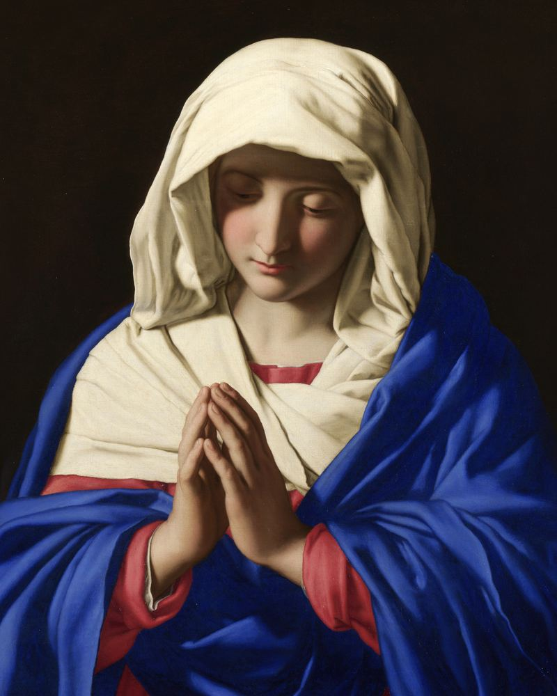
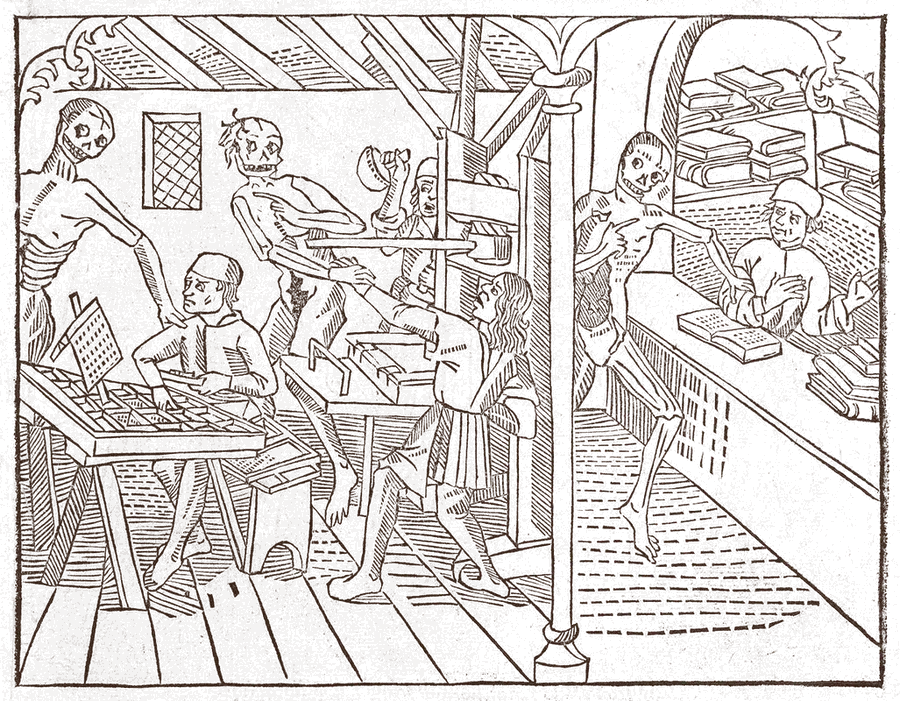

The Story
Set in 1348 during the Black Plague, the story follows a small village community on the verge of destruction. Famine, war, and now plague scar the land. When the dead start to rise, everyone believes the apocalypse has arrived. But are these returned souls controlled by the Devil, or a sign from God?
Isabel, a 16-year-old villager, has visions of her recently deceased mother’s soul burning in Hell, and is desperately praying for a way to save her. When the local priest offers a way to save the village from the raised dead and her mother’s soul, Isabel finds herself barreling down a path of martyrdom. But when she volunteers for death, her father will unleash a catastrophe that may kill dozens just to keep her safe.
Themes
At its core, Danse Macabre asks:
- What is the right way to love someone?
- Can you love a person’s soul at the cost of their body?
- Can you love a person’s life at the cost of their will?
- The awful, horrible, and beautiful things we do for love
- Betrayal
- Redemption
- Losing a parent, the center of your world, and learning how to live after they’re gone
The Film
- Genre
- Medieval action horror zombie short
- Setting
- A village in 1348, during the Black Plague
- Writer & Director
- Ethan Hewlett
- Filming
- December 2026, New Hampshire
- Made at
- Emerson College, as a senior film

Already raised $4,680 of $8,000